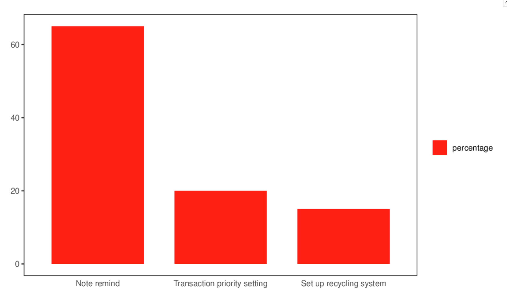
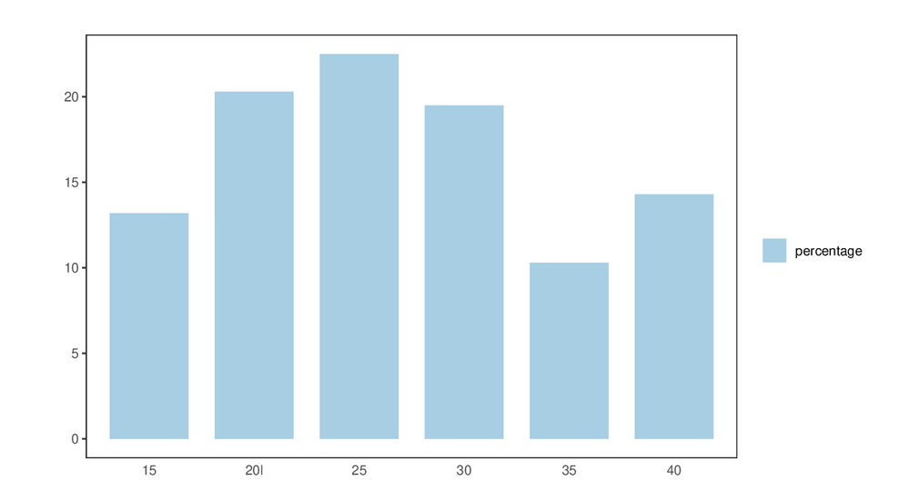
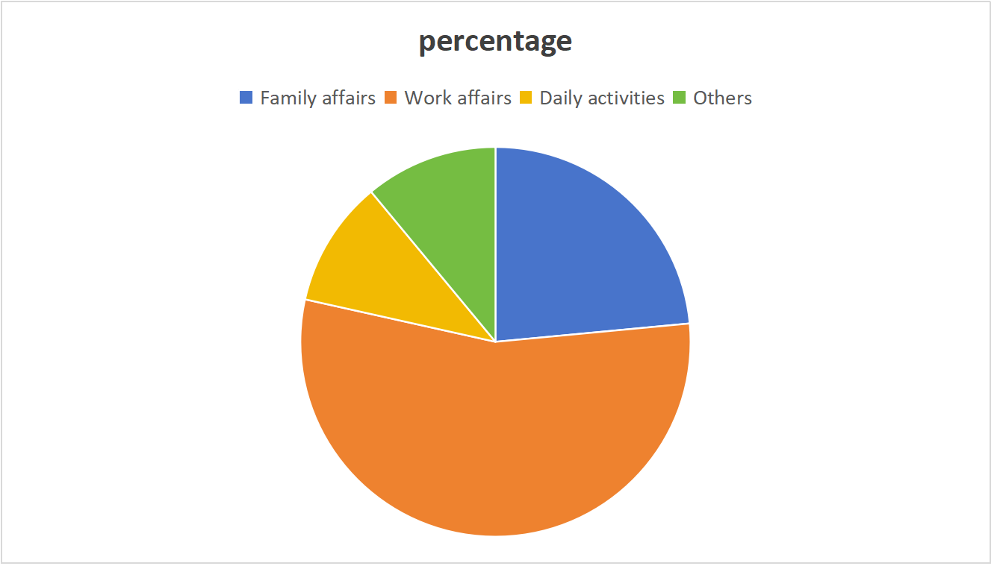
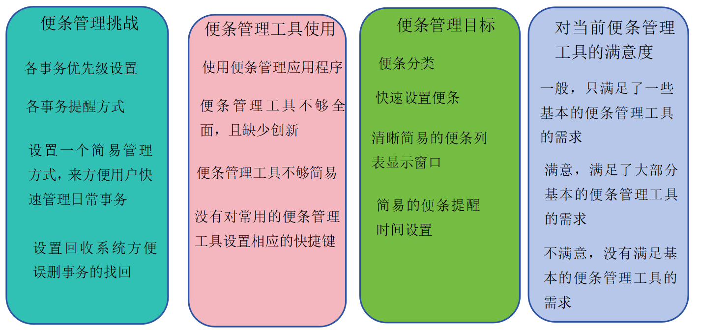

团队目标：
团队的目标是开发一款名为 “EaseNote” 的便条管理应用程序，旨在提供简单而强大的便条管理功能，以帮助用户更高效地管理他们的日常和工作事务。我们希望了解潜在用户的需求、工作环境以及他们在日常事务管理的经验，以确保 “EaseNote” 能够满足他们的需求并为他们提供有价值的功能。
团队分工：
陈裕科：负责调查分析部分，是这一部分的主要原始撰写者，并进行初步的数据整理和分析。
刘丽华：负责亲和图表的制作，并将原始数据转化为数字版本，是亲和图表的主要原始撰写者。
袁海峰：负责调查问卷设计和数据收集，参与了调查的执行和数据整理。
朱子越：负责在团队某一部分遇到困难时给予帮助，并最终调整报告格式，使报告满足要求。
在我们的调查中，我们收集了不同领域的不同回答，以了解他们的便条管理需求和体验。通过合适的可视化格式，我们能够清晰地呈现了一些重要的发现。根据我们的数据，约65%的受访者提到了便条设置提醒的问题。我们使用柱状图来展示这些特征：
在我们的调查样本中，还调查了受访者的年龄分布，我们发现受访者的年龄分布相对均匀，大多数人处于20到30岁之间，表明便条管理工具的需求在各年龄段都普遍存在，尤其是20到30岁之间的人群。通过下图柱状图我们可以清晰的观察他的分布：
此外，我们还调查了受访者在在哪些场景会使用便条管理系统。这些包括家庭事务、工作事务、日常活动等。这些信息对于我们了解受访者的日常生活和需求非常有帮助。通过了解受访者的兴趣爱好，我们可以更好地了解他们的生活方式和时间分配情况。这有助于我们在设计 “TaskEase” 应用时考虑到用户的日常活动，并提供更贴近他们需求的功能。下面是他们的可视化图：
通过调查数据分析，我们学到了便条管理在受访者中的使用非常普遍，但同时也存在一些共同的问题。便条设置提醒问题是普遍存在的，但有一些意外的发现。有一部分受访者表示他们愿意更多地使用便条管理工具，只要该工具能够提供给他们便携的便条管理。这一发现表明，便条管理工具的未来发展可能需要更多的便携操作功能。这些发现对 “EaseNote” 应用的设计非常有指导意义。我们可以优化工具以更好地满足不同用户的需求，从而提供更高效的便条管理体验。

1.图表包含的重要主题：
我们的亲和图表包含了关于便条管理的重要主题。这些主题涵盖了便条管理的挑战、使用等。通过图表我们能够清晰地看到这些主题的关联性，以及它们在便条管理中的重要性。 便条管理工具是一个主题，它包括了与便条管理工具相关的所有子主题。在图表中，便条管理工具主题下有子主题，如便条管理工具不够全面、没有对常用便条管理操作设计快捷键等。这种结构有助于我们更好地理解各个主题之间的关系。
2. 最终图表具有主题和子主题的结构/关系。
亲和图表的结构非常清晰，主题和子主题之间的关系得以明确呈现。这有助于我们更深入地理解任务管理领域的各个方面。
3. 我们学到了什么？
通过亲和图表分析，我们进一步加深了对便条管理主题的理解。我们了解到不同主题之间的关联性，以及受访者对便条管理工具的期望。一些意外的发现包括受访者对更好的便条分类和事务提醒的渴望。这将有助于我们在 "EaseNote" 应用中提供更有价值的功能。